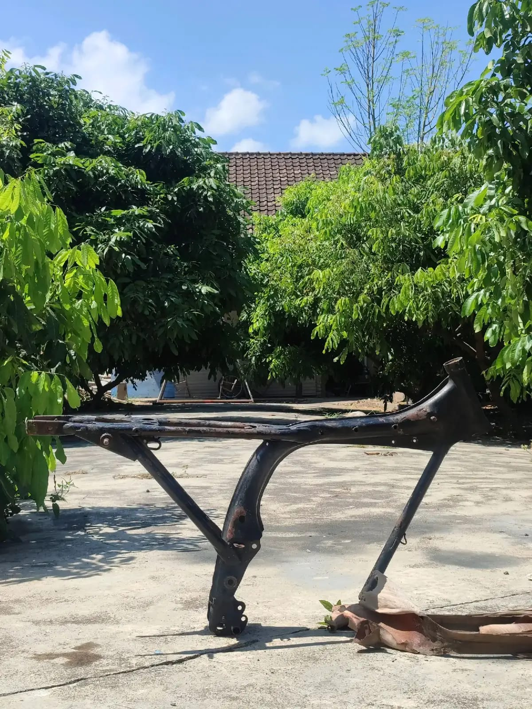
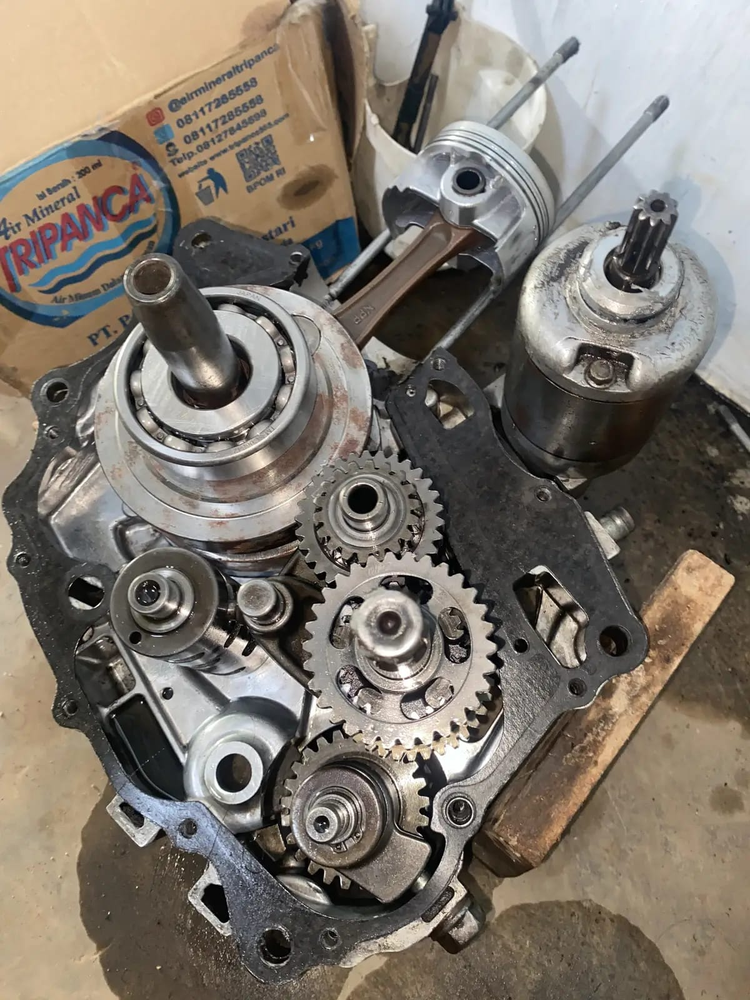
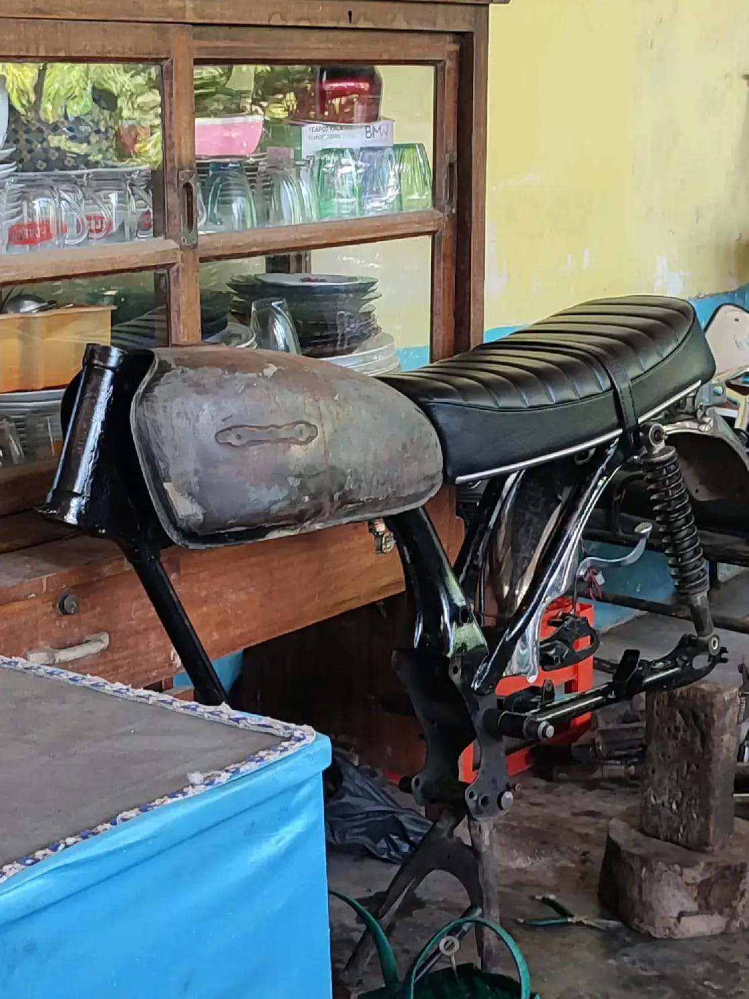

Restorasi Motor Tua
Mengembalikan motor ke kondisi terbaiknya tanpa menghilangkan bentuk aslinya.
Old Garage
Garage sederhana untuk motor tua yang penuh cerita.
Old Garage adalah garage yang berfokus pada restorasi, perbaikan, dan modifikasi motor tua dan klasik. Kami membantu pemilik motor mengembalikan kondisi motor mereka dengan tetap mempertahankan karakter dan cerita dari setiap motor.
Setiap pengerjaan kami dokumentasikan dengan foto agar pemilik tahu kondisi awal, proses, dan hasil akhirnya secara jujur.
Tiga hal utama yang kami kerjakan setiap hari.

Mengembalikan motor ke kondisi terbaiknya tanpa menghilangkan bentuk aslinya.

Merawat mesin dan bagian penting motor agar tetap aman dan nyaman dipakai.

Menyesuaikan tampilan motor sesuai keinginan pemilik dengan gaya retro yang sopan.
Setiap motor tua memiliki sejarah dan karakter tersendiri. Ada yang menyimpan kenangan keluarga, ada yang menjadi saksi perjalanan jauh.
Karena itu proses restorasi di Old Garage tidak hanya memperbaiki kondisi motor, tetapi juga mempertahankan nilai dan karakter motor tersebut agar ceritanya tetap hidup.